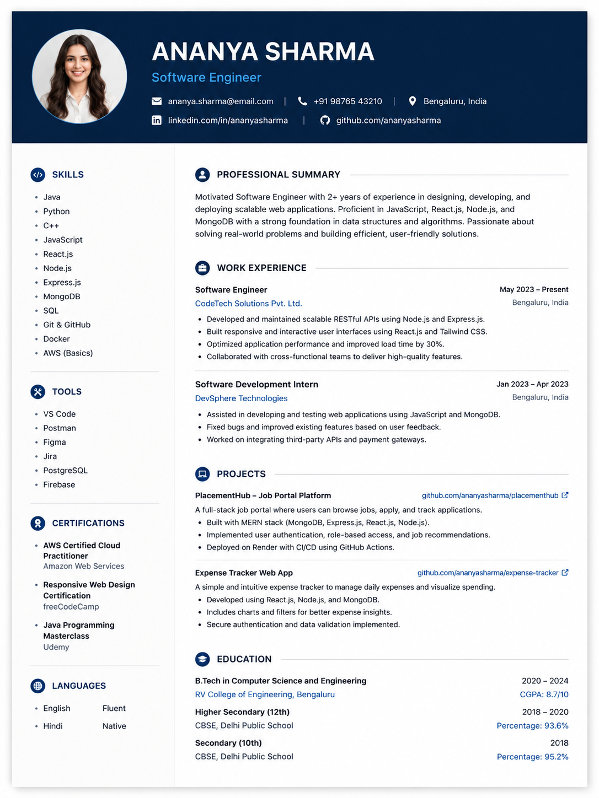

Built for students & professionals
Create a resume that gets shortlisted.
ResumeForge helps you build ATS-friendly resumes, optimize them with AI, preview changes live, and export recruiter-ready resumes in minutes.
Trusted by 2,000+ students
Role Match
96%
Excellent Match

Suggested Skill
System Design